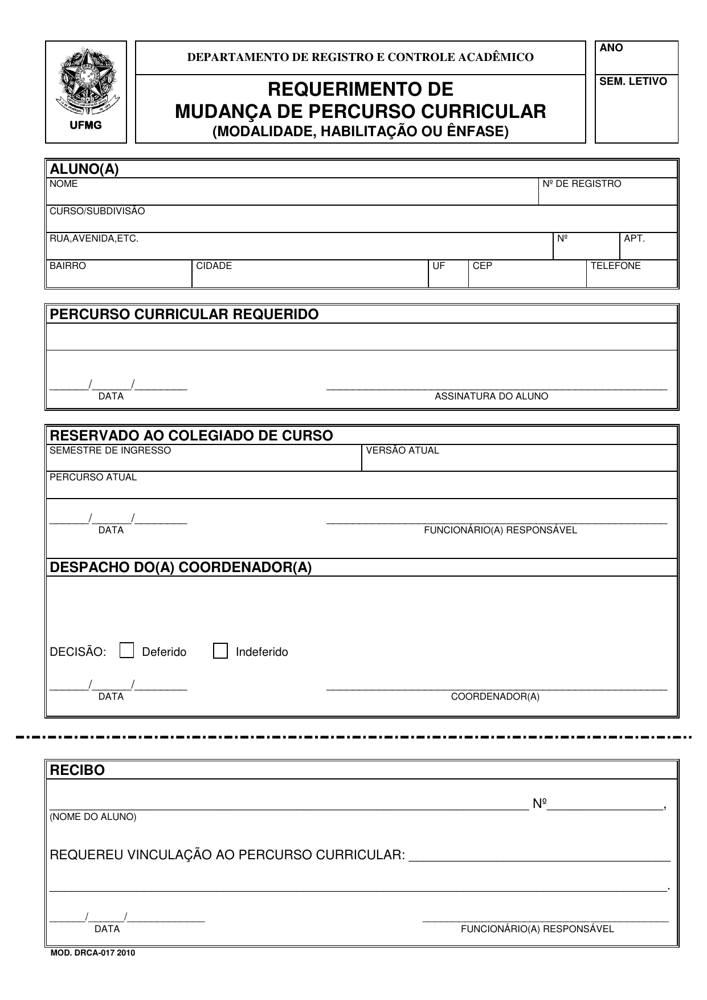

Documentos Oficiais do Curso
Repositório dos atos normativos, projeto pedagógico, regulamento, ementário e matrizes curriculares
Acervo Oficial FAFICH/UFMG Versão Curricular N-20229 8 PDFs + 9 Formulários
REPOSITÓRIO NORMATIVO DE GESTÃO PÚBLICA
Todas as diretrizes, prazos e regras informados neste portal baseiam-se estritamente nos documentos oficiais aprovados pelas instâncias colegiadas da UFMG (Colegiado de Gestão Pública, Congregação da FAFICH e Conselho de Ensino, Pesquisa e Extensão - CEPE), bem como no Regimento Interno formal da entidade discente. Disponibilizamos abaixo os arquivos originais digitalizados para consulta pública e download.
BUSCAR DOCUMENTO OFICIAL OU FORMULÁRIO DE REQUERIMENTO
Atos Institucionais da Representação Discente
O documento supremo de auto-organização, direitos discentes e governança do Centro Acadêmico de Gestão Pública da FAFICH/UFMG:
Regimento Interno do Centro Acadêmico de Gestão Pública (CAGP)
Documento normativo soberano que define a natureza civil, autônoma e suprapartidária do CAGP (Art. 3º e 4º), os princípios regedores da Administração Pública de legalidade, impessoalidade, moralidade, publicidade e eficiência (Art. 8º, III), a estruturação em 7 Diretorias Executivas com no mínimo 8 membros (Art. 24 e 25), a soberania da Assembleia Geral (Art. 35 a 40), a fiscalização pela Junta Eleitoral permanente e independente (Art. 20 a 23) e o rito de eleições diretas e secretas com debate obrigatório (Art. 41 a 45).
Atos Fundamentais do Curso
Os documentos basilares que regem a estrutura pedagógica, os direitos e os deveres dos discentes de Gestão Pública da UFMG:
Projeto Pedagógico do Curso (PPC)
Documento institucional completo que define o perfil do egresso, as competências técnicas e analíticas, a matriz curricular de 3.000 horas no turno noturno, as diretrizes de extensão obrigatória e a justificativa pedagógica do curso de Gestão Pública da UFMG.
Regulamento do Curso de Graduação
Conjunto formal de regras regimentais do curso: matrícula mínima semestral de 180h (12 créditos), os 3 percursos formais (Art. 3º), Atividades Acadêmicas Complementares e prazos de 120 dias (Art. 15), dispensa de estágio profissional (Art. 41), TCC e avaliação de conhecimentos (Art. 51).
Ementário Geral do Curso
O programa curricular com os objetivos de ensino, conteúdos e referências bibliográficas de todas as matérias:
Ementário Oficial das Disciplinas Obrigatórias
Catálogo normativo que detalha as ementas oficiais, objetivos programáticos e bibliografias recomendadas de todas as 27 disciplinas obrigatórias dos 10 períodos curriculares, fundamentando o aprendizado teórico e instrumental em políticas públicas, finanças, avaliação e governança.
Matrizes Curriculares dos Três Percursos Oficiais
Conforme o Art. 3º do Regulamento, o curso oferece 3 modalidades formais de percurso curricular registradas nos sistemas acadêmicos da UFMG:
Formulários e Requerimentos Administrativos
Modelos oficiais disponibilizados pelo Colegiado de Coordenação Didática da FAFICH/UFMG para abertura de processos acadêmicos via SEI ou protocolo presencial:
Trajetória Curricular e Matrícula
Aproveitamento, Conclusão & Condições Especiais
Tutorial Visual: Requerimento de Mudança de Percurso (DRCA)
Como Preencher o Requerimento de Mudança de Percurso Curricular (DRCA)
Utilize este formulário padronizado do DRCA para solicitar a vinculação formal a um dos 3 percursos do curso (Geral 01-01, Complementar 01-02 ou Avançado 01-03) ou para alteração de ênfase curricular:

1. Ano Letivo e Dados Pessoais
Preencha o Ano e o Semestre Letivo corrente no cabeçalho. No bloco de identificação, insira seu nome completo, Nº de Registro (Matrícula), curso (Gestão Pública - Subdivisão 003) e endereço de residência atualizado.
2. Percurso Curricular Requerido
Escreva textualmente o percurso pretendido: Bacharelado com Núcleo Geral, Bacharelado com Núcleo Complementar ou Bacharelado com Núcleo Avançado. Date e assine no campo indicado.
3. Trâmite: Colegiado & Protocolo no DRCA
Não preencha os campos inferiores. Entregue o formulário no guichê do CEAG (2º andar da FAFICH) para conferência da versão curricular e assinatura da Coordenação do Curso antes do envio definitivo ao DRCA.
Prazo no Calendário Acadêmico
A mudança de percurso deve obedecer estritamente às datas estipuladas no Calendário Escolar DRCA/UFMG (geralmente nas primeiras semanas de cada semestre letivo).
Como Usar os Documentos Oficiais em Requerimentos
- Citação Literal em Requerimentos: Ao solicitar dispensa de pré-requisitos, aproveitamento de estudos ou justificativa de quebra de matrícula no SEI, cite o artigo específico do Regulamento do Curso.
- Dispensa de Estágio (Art. 41): Estudantes que exercem cargo público efetivo, função pública ou cargo em comissão devem anexar cópia do Art. 41 do Regulamento junto ao termo de posse e declaração de atribuições no processo SEI.
- Prazo Decadencial de AAC (Art. 15): Os certificados de Atividades Acadêmicas Complementares devem ser protocolados em no máximo 120 dias corridos a contar do início do semestre seguinte à conclusão da atividade.
- Dúvidas ou Apoio: Caso tenha dificuldades na interpretação das normas ou no trâmite processual com o Colegiado, procure a diretoria do CAGP pelo e-mail cagp@fafich.ufmg.br.